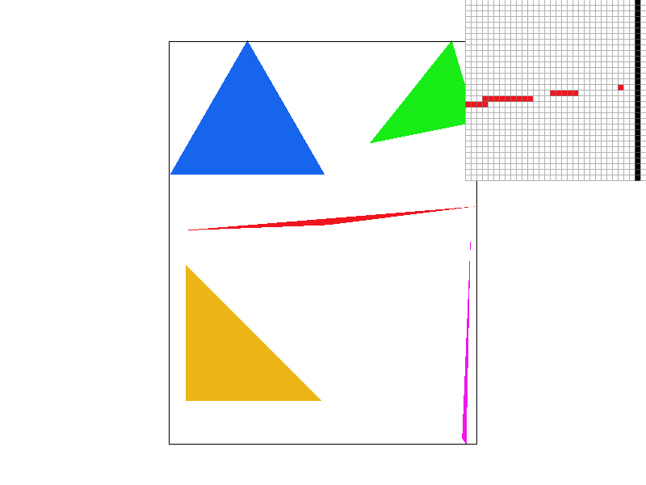
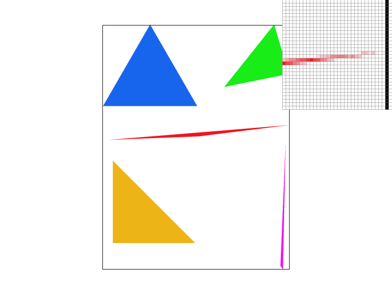
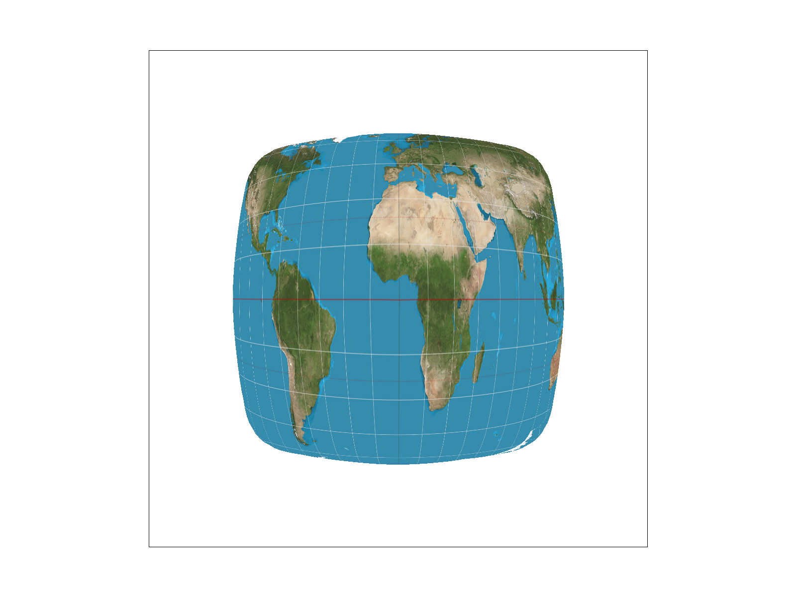
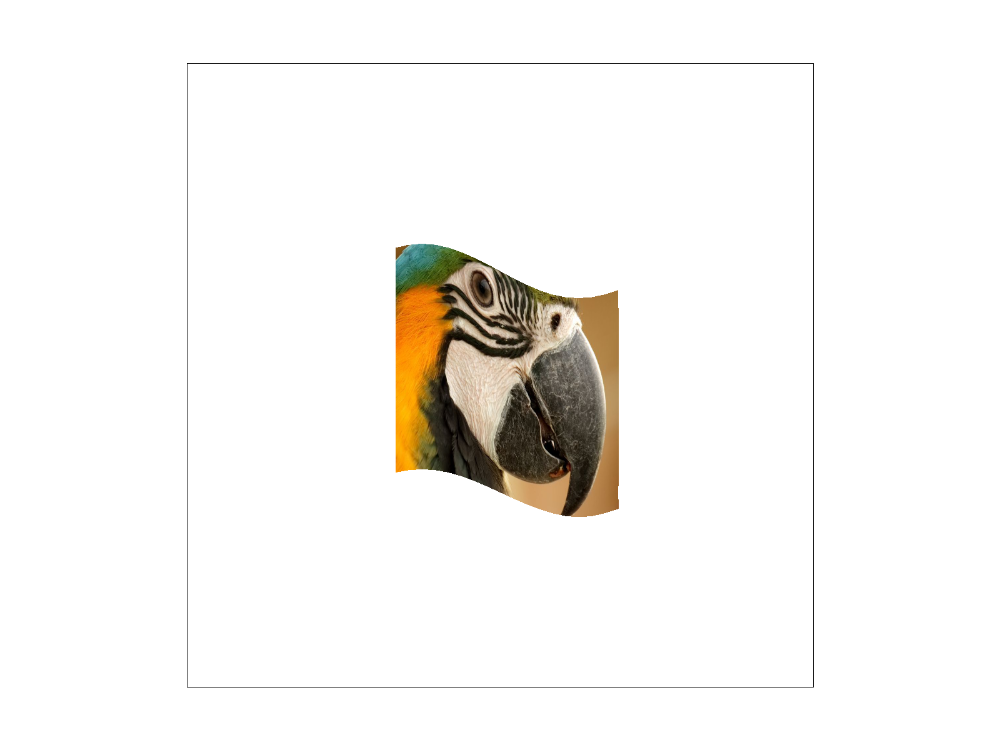

CS184/284A Spring 2025 Homework 1 Write-Up
Link to webpage: https://cal-cs184-student.github.io/hw-webpages-awesomesauce-1/hw1/index.html
Link to GitHub repository: https://github.com/cal-cs184-student/hw-webpages-awesomesauce-1/tree/49f86b95ceba1e500bb3b2ac2c313dadbdf88428/hw1
Overview
For this assignment, we implemented a basic rasterization pipeline, including drawing single-color triangles, antialiasing via supersampling, and transformations using affine matrices. This project helped solidify our understanding of computer graphics fundamentals, especially in terms of rendering pipeline efficiency and visual quality enhancement through antialiasing. It was particularly interesting how small algorithmic tweaks, such as optimizing triangle rasterization or adjusting sampling rates, significantly impact final image quality.Task 1: Drawing Single-Color Triangles
To rasterize a triangle, we iterated over all pixels within its bounding box and checked whether each pixel’s center was inside the triangle using a point-in-triangle test. The test leveraged edge equations, where a point \( (x, y) \) is inside a triangle defined by vertices \( (x_0, y_0), (x_1, y_1), (x_2, y_2) \) if it satisfies: \[ (x - x_0)(y_1 - y_0) - (y - y_0)(x_1 - x_0) > 0 \] for all three edges consistently (all negative). Once a pixel was determined to be inside the triangle, it was filled with the triangle's color.Efficiency Considerations
Since the algorithm only checks pixels within the bounding box of the triangle, it avoids unnecessary computations outside the relevant area.Screenshots
Task 2: Antialiasing by Supersampling
Supersampling mitigates aliasing by subdividing each pixel into multiple subpixels, sampling them separately, and averaging the results.Implementation
- Modified the rasterization loop to iterate over subpixels within each pixel.
- Checked subpixels using the same point-in-triangle test.
- Averaged the colors of all subpixel samples for smoother results.
Comparison of Sample Rates
|

|
|
|

|
Task 3: Transforms
For this task, we modified `svg/transforms/robot.svg` by making the cubeman wave and turning the robot blue. This was achieved by applying the following transformations:- Rotation: Rotated the right arm around the shoulder joint to simulate a waving motion.
- Color Change: Changed body color to blue to differentiate.
Screenshots

Task 4: Barycentric coordinates
Explanation of Barycentric Coordinates
Barycentric coordinates provide a way to describe a point’s position relative to a triangle’s three vertices. Instead of using standard (x, y) Cartesian coordinates, a point inside a triangle is represented as a weighted combination of the triangle's vertices:
Given a triangle with vertices \( A(x_0, y_0) \), \( B(x_1, y_1) \), and \( C(x_2, y_2) \), any point \( P(x, y) \) inside or on the triangle can be represented as:
\[ P = \alpha A + \beta B + \gamma C \]
where:
- \( \alpha, \beta, \gamma \) are the barycentric coordinates.
- \( \alpha + \beta + \gamma = 1 \) (sum must be 1).
- Each weight determines how much influence a vertex has on the point’s final color.
Implementation
In our function rasterize_interpolated_color_triangle, we used barycentric coordinates to interpolate colors across a triangle.
Steps:
- Compute Bounding Box: Determine the smallest rectangle that encloses the triangle.
- Iterate Through Pixels: Loop through each pixel in the bounding box.
- Compute Barycentric Coordinates: Using the determinant method, calculate \( \alpha, \beta, \gamma \).
- Check if Pixel is Inside the Triangle: A pixel is inside if all barycentric coordinates are non-negative.
- Interpolate Color: The color at each pixel is calculated using \[ C(x, y) = \alpha C_A + \beta C_B + \gamma C_C \].
- Render the Pixel: Assign the interpolated color to the pixel.
Results
The output displays a color wheel.
Task 5: Pixel Sampling for Texture Mapping
Pixel sampling is the process of determining the color of a pixel by fetching a corresponding value from a texture. In texture mapping, a texture coordinate (u, v) is mapped onto a surface in world space, and pixel sampling is used to determine the appropriate color values.
We implemented two types of pixel sampling methods: nearest neighbor and bilinear interpolation.
- Nearest Neighbor Sampling: This method selects the closest texel to the given (u, v) coordinate and assigns it as the pixel color. It is computationally efficient but can result in pixelated and blocky textures when the image is magnified.
- Bilinear Interpolation: This method takes the four closest texels and computes a weighted average based on the fractional part of the texture coordinates. This results in a smoother texture appearance but requires more computation.
We tested our implementation using the `svg/texmap/` directory files and captured the results using the 'S' hotkey as required. Below are the four comparisons:
|
|
|
|

|
|
Observations:
- Nearest neighbor sampling at 1 sample per pixel results in noticeable blocky pixels.
- Nearest neighbor sampling at 16 samples per pixel improves the quality but still lacks smooth transitions.
- Bilinear interpolation significantly reduces pixelation, making textures look much smoother.
- With 16 samples per pixel, bilinear interpolation achieves the highest quality with smooth texture transitions.
When is the difference most noticeable?
- The difference between nearest and bilinear sampling is most noticeable when zooming in on textures or when dealing with diagonal edges.
- Bilinear interpolation performs better when textures contain gradients, as it reduces the visual artifacts caused by aliasing.
- Nearest neighbor sampling might be acceptable for pixel art but is undesirable for high-resolution texture mapping.
In conclusion, bilinear interpolation generally provides a much better visual result at the cost of slightly more computation, making it the preferred method for most texture mapping applications.
Task 6: Level Sampling with Mipmaps for Texture Mapping
Explanation of Level Sampling
Level sampling is a texture mapping technique that determines which mipmap level to use based on the screen-space footprint of a texture. Instead of always sampling from the highest-resolution texture, we select an appropriate lower-resolution version when objects are further away, reducing aliasing artifacts like Moiré patterns.
Each mipmap level contains a downsampled version of the original texture:
- Level 0 → Full resolution (e.g., 512 x 512)
- Level 1 → Half resolution (e.g., 256 x 256)
- Level 2 → Quarter resolution (e.g., 128 x 128)
- …
- Last Level → 1 x 1 texture
Using mipmaps, we improve rendering efficiency and reduce artifacts in textured surfaces.
Tradeoffs Between Speed, Memory, and Antialiasing
| Method | Speed | Memory Usage | Antialiasing Power |
|---|---|---|---|
| P_NEAREST (Pixel Sampling) | Fastest | Low | Poor (Blocky) |
| P_LINEAR (Bilinear Filtering) | Moderate | Low | Better (Smooth) |
| L_ZERO (No Mipmap) | Fast | High | Aliasing Issues |
| L_NEAREST (Discrete Mipmap Selection) | Moderate | Medium | Reduces Moire Patterns |
| L_LINEAR | Slowest | Low | Best |
Screenshots and Comparisons
We tested four configurations using a custom PNG texture:
- L_ZERO + P_NEAREST
- L_ZERO + P_LINEAR
- L_NEAREST + P_NEAREST
- L_NEAREST + P_LINEAR
|  |
|
Extra Credit: Anisotropic Filtering
Anisotropic filtering improves texture clarity at oblique angles by sampling multiple directions instead of a single mipmap level.
Why is Anisotropic Filtering Better?
- Minimizes blurring and distortion when viewing textures at steep angles.
- Significantly improves texture quality compared to trilinear filtering.
| Method | Result |
|---|---|
| Linear Filtering | Blurry at extreme angles |
| Anisotropic Filtering | Sharpest, clearest textures |